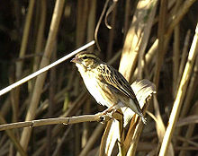
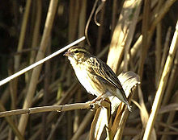

| Rock Sparrow | |
|---|---|
|  | |
| Conservation status | |
| Binomial name | |
| Petronia petronia (Linnaeus, 1766) |
| Rock Sparrow | |
|---|---|
|  | |
| Conservation status | |
| Binomial name | |
| Petronia petronia (Linnaeus, 1766) |
The Rock Sparrow, Petronia petronia, is a small passerine bird. This sparrow breeds on barren rocky hills from the Iberian peninsula and western north Africa across southern Europe and through central Asia. It is largely resident in the west of its range, but Asian birds migrate to more southerly areas, or move down the mountains.
It is a rare vagrant north of its breeding range. There is just a single record from Great Britain, at Cley, Norfolk on 14 June 1981.
This gregarious bird is also found in human settlements in suitable country. It nests in crevices in rocks or walls, laying 3–7 eggs.
This species is a large stocky sparrow, 15–17 cm in length, with a strong whitish supercilium and weaker crown stripe. It has a patterned brown back and wings, streaked underparts, and a diagnostic, but hard-to-see, yellow throat spot.
The Rock Sparrow's food is mainly seeds with some insects. This bird has a loud wheezy song.

{kind=link}